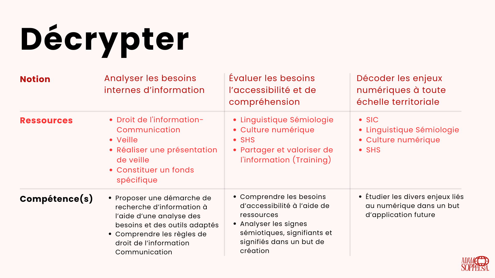
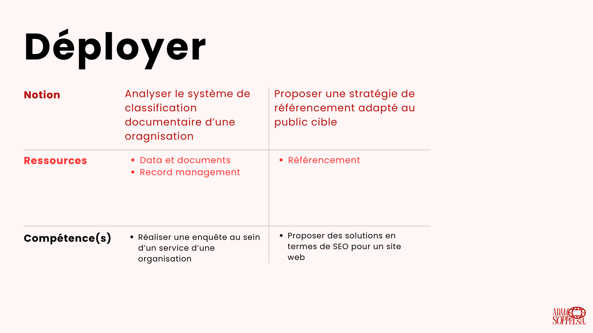
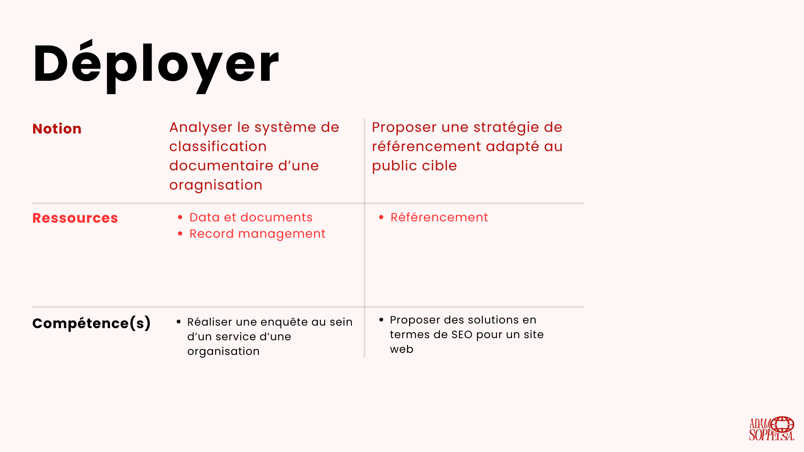
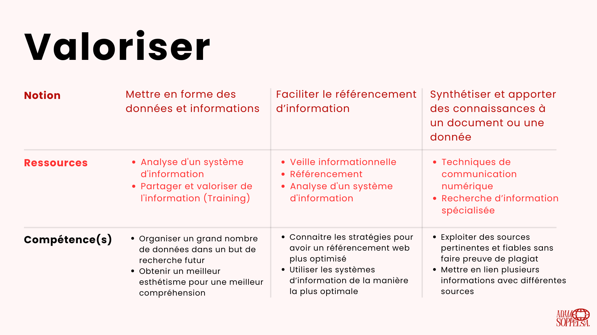
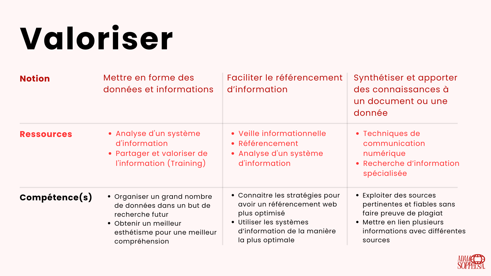

Portfolio
For the end of the year, our professors asked us to create a portfolio entirely coded in HTML/CSS (the one you're on) to showcase all our capabilities to our future schools and employers.
For my part, I went with a website in red tones. The artistic direction is very minimalist, which gives the site an elegant look without being overwhelming. The main logo uses the "PERANDORY CONDENSED" font. For the body text, I used the Poppins font (current font). For titles and subtitles, I simply played with the style (bold, italic, etc.) and text size.
In the header, there's a hamburger menu, the logo, and the option to choose between French and English, which is a real asset. This allows the site to be international.
In the footer, you'll find the date, license, and my LinkedIn page (in the form of the application logo).
The site has several sections :
- “Home” : A brief introductory text and a photo presenting my academic objectives.
- “Works” : Several of my most successful projects from my first three years of higher education.
- “About me” : A text accompanied by my Resume, which provides more details about my ambitions.
- “Contact” : For any questions or requests, a form is available.
This work allowed me to increase my HTML/CSS skills, both technically and aesthetically. I also used JavaScript, which wasn't required in the initial instructions, but was necessary for the hamburger menu or changing photos on the "Works" page.
Visualize or download the complete PDF by clicking on it.
 

 
